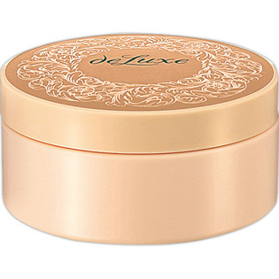
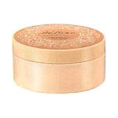

返回列表
产品名称：ドルックス クレンジングクリームN

資生堂 ドルックス クレンジングクリームN ＿
メーカー 資生堂
JANコード 4901872241255
商品の特徴
ソフトな感触でなめらかにのびる、クリームタイプのメーク落とし
ソフトな感触でなめらかにのび、メーキャップや肌の汚れをすっきりと落とす、ふきとり専用のクレンジングクリーム。
成分・分量
-
用法及び用量
＜使用方法＞
●指先にさくらんぼ1コ分を目安にとり、ファンデーションや汚れとよくなじませます。その後、ティッシュペーパーでやさしくふきとってください。